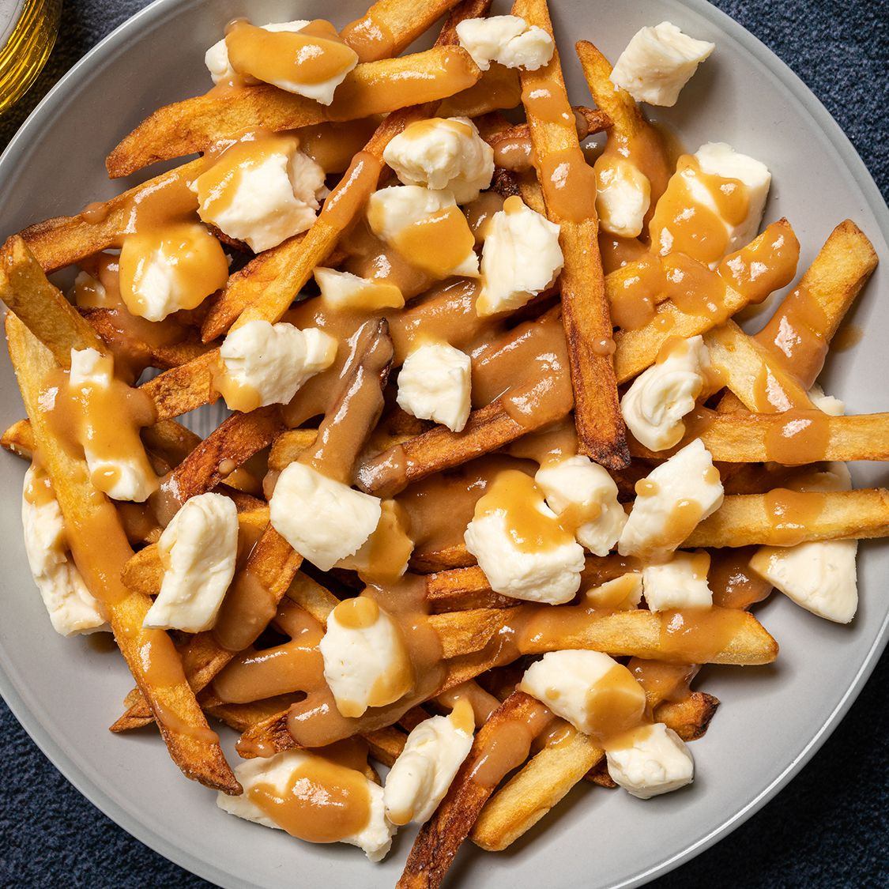

Poutine

Description
This poutine is an indulgence of fries, gravy, and cheese. A Canadian specialty!
As the old joke goes, it takes a lot of time and effort to make poutine, but at least when you're finally done you get to eat soggy fries. And, what incredibly delicious, soggy fries they are.
Ingredients
- 1 quart vegetable oil for frying
- 1 (10.25 ounce) can beef gravy
- 5 medium potatoes, cut into fries
- 2 cups cheese curds
Steps
- Heat oil in a deep fryer or deep heavy skillet to 365 degrees F (185 degrees C).
- While the oil is heating, begin to warm gravy.
- Place fries into the hot oil, and cook until light brown, 8 to 10 minutes. Cook fries in batches if necessary to allow them room to move a little in the oil. Remove to a paper towel-lined plate to drain.
- Place fries on a serving platter, and sprinkle cheese over them. Ladle warmed gravy over the fries and cheese, and serve immediately.